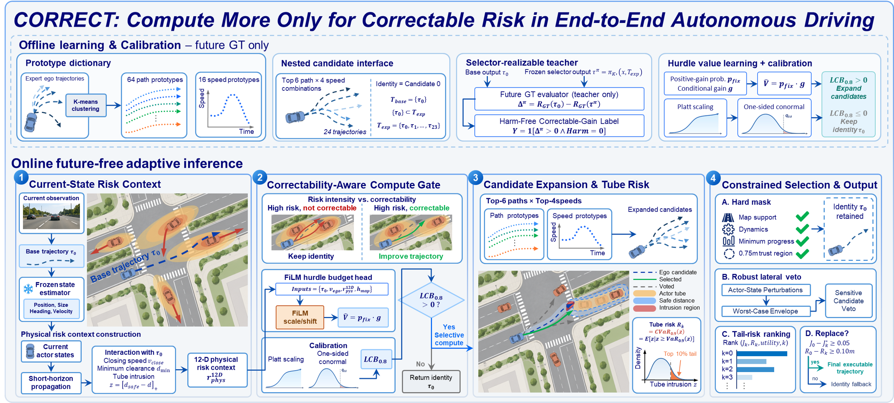
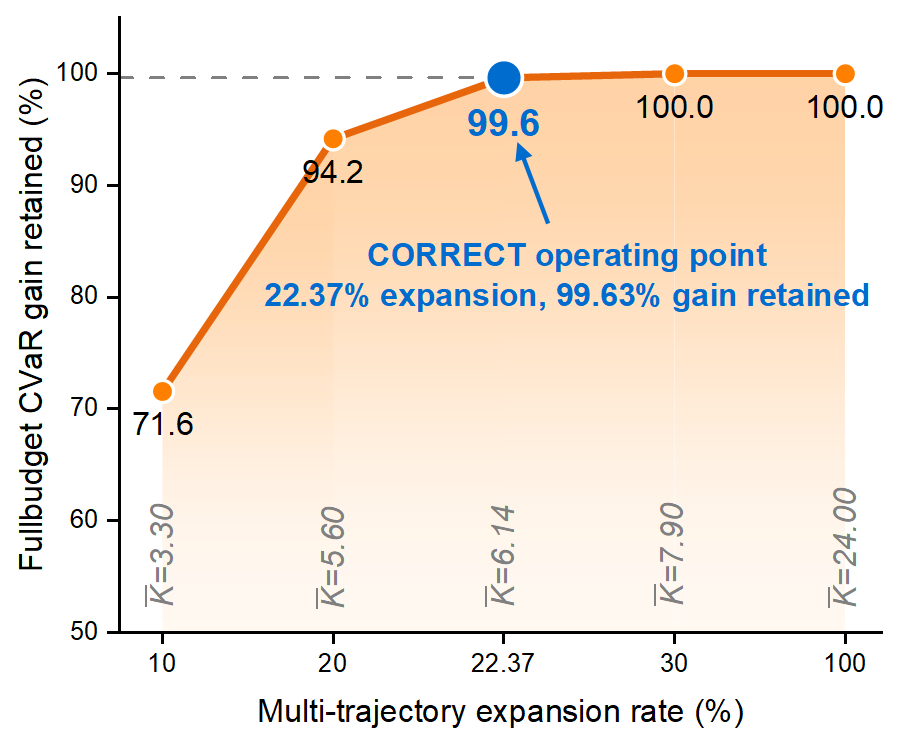
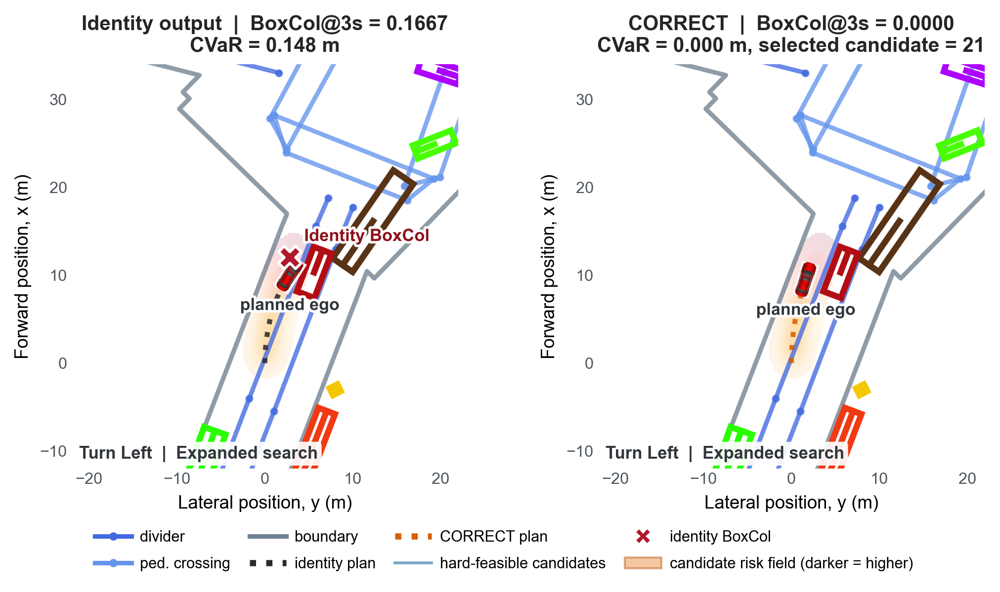

Risk intensity
How demanding is the current interaction?
Closing speed, minimum clearance, actor-tube intrusion, ego motion, and map context summarize the current state.
ICRA 2027 Submission
Anonymous submission
Core idea. Interaction risk alone does not determine whether more computation is useful. CORRECT expands trajectory search only when the observed risk is likely to admit an executable improvement, then selects the final action using candidate-level tail risk and feasibility constraints.

High interaction risk in end-to-end driving does not necessarily warrant a larger inference budget: the critical question is whether additional action search can actually correct that risk. CORRECT defines scene-level correctability by the counterfactual safety gain realizable by a frozen downstream selector. A lightweight FiLM hurdle head estimates the probability and magnitude of positive gain, and activates expanded search only when a one-sided conformal lower bound remains positive. Expanded candidates combine data-driven path and speed prototypes while preserving the original output as an exact identity candidate. At the candidate level, CORRECT measures closing-speed-aware safety-distance intrusion along actor tubes, aggregates its upper tail with CVaR, and applies map, dynamics, perturbation-robustness, and relative-improvement constraints before changing the action.
On nuScenes validation, CORRECT reduces 3 s and average body-collision rates by 5.08% and 4.63%, respectively, while changing 3 s trajectory L2 by only 0.11%. It expands only 22.37% of scenes, evaluates 6.145 candidates on average, retains 99.63% of the full-budget CVaR gain and all collision rescues, and reduces mean candidate post-processing latency by 60.98%. On NAVSIM navtest, risk-conditioned intervention yields five fewer net at-fault collisions.
CORRECT separates the decision to spend computation from the decision to execute a trajectory. This distinction avoids treating every intense interaction as equally responsive to a larger candidate set.
Risk intensity
Closing speed, minimum clearance, actor-tube intrusion, ego motion, and map context summarize the current state.
Correctability
Supervision is tied to the gain that the frozen selector can realize—not to an oracle candidate or risk score alone.
Extract a future-free physical context from the base trajectory, current actors, ego state, and map support.
Predict positive-gain probability and conditional gain, then expand only when the calibrated lower bound is positive.
Combine local path and speed prototypes in a nested candidate set that always retains the identity trajectory.
Apply hard feasibility, perturbation-aware vetoes, CVaR ranking, and improvement margins before replacement.
The experiments test whether correctability concentrates computation on useful scenes, whether candidate-level risk turns added support into safer actions, and whether the resulting budget reduction produces measurable runtime savings.

Reading the curve
Expanding only 10% of scenes already recovers 71.6% of the full-budget CVaR gain; at 20%, the retained gain reaches 94.2%. This steep initial rise indicates that additional search has strongly non-uniform value.
The frozen 22.37% operating point retains 99.63% of the gain with 6.145 candidates on average. Increasing the expansion rate to 30% or 100% yields no further measured gain, so the selected point captures the saturation region without paying the full candidate-evaluation cost.
Open-loop benchmark
Lower is better for all reported metrics.
| Method | Avg. L2 (m) | Collision@1s | Collision@2s | Collision@3s | Avg. collision |
|---|---|---|---|---|---|
| UniAD | 1.03 | 0.05% | 0.17% | 0.71% | 0.31% |
| VAD-Base | 1.22 | 0.04% | 0.39% | 1.17% | 0.53% |
| Drive-WM | 0.80 | 0.10% | 0.21% | 0.48% | 0.26% |
| LAW (perception-free) | 0.61 | 0.14% | 0.21% | 0.54% | 0.30% |
| SSR | 0.74 | 0.00% | 0.08% | 0.43% | 0.17% |
| World4Drive | 0.50 | 0.02% | 0.12% | 0.33% | 0.16% |
| SynAD | 0.80 | 0.04% | 0.10% | 0.20% | 0.11% |
| CORRECT | 0.6184 | 0.0977% | 0.1416% | 0.3647% | 0.2013% |
Public results are included for context; evaluation protocols can differ across methods.
Equal expansion budget
All gates expand 22.37% of scenes.
| Gate | Full-budget CVaR gain retained | Positive-gain recall | New / rescued BoxCol@3s |
|---|---|---|---|
| Random | 22.19% | 21.82% | 0 / 0.85 |
| Uncertainty | 8.16% | 4.38% | 0 / 0 |
| Risk intensity | 95.50% | 94.89% | 0 / 3 |
| Correctability point value | 97.04% | 98.54% | 0 / 3 |
| CORRECT-LCB | 99.63% | 99.27% | 0 / 3 |
Random is averaged over 20 repetitions. Correctability preserves more realizable gain than uncertainty or risk intensity alone.
Measured efficiency · RTX 3090, batch size 1
NAVSIM v2 navtest · bug-fixed EPDMS
Each video shows the same rolling scene under the identity output and CORRECT. The final 3 s open-loop window isolates the decision in which expanded search exposes a feasible lower-risk action.

Case 2 · frame-level analysis
The identity output preserves the original turning intent, but its terminal footprint intersects the crossing actor at 3 s. The corresponding body-collision score is 0.1667 and the trajectory-tube CVaR is 0.148 m, identifying a concentrated interaction in the tail of the risk distribution.
Together, the video and static view connect the temporal decision to its geometric cause: CORRECT does not replace the turning intention, but introduces the clearance needed to resolve the interaction.
@inproceedings{anonymous2027correct,
title = {CORRECT: Compute More Only for Correctable Risk in
End-to-End Autonomous Driving},
author = {Anonymous Authors},
booktitle = {IEEE International Conference on Robotics and Automation},
year = {2027}
}